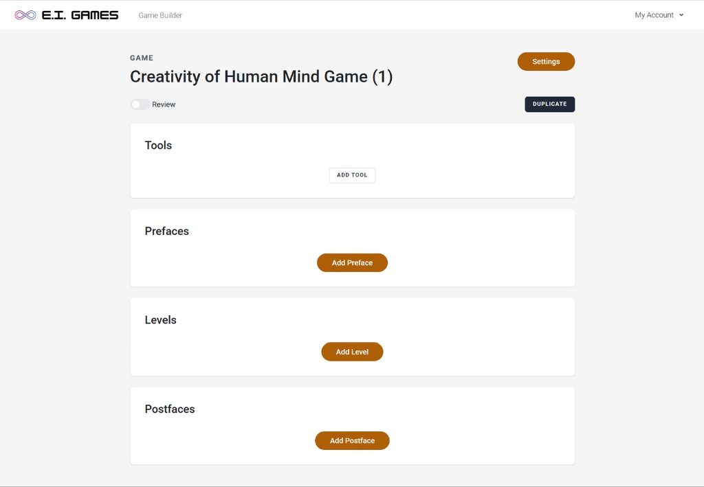
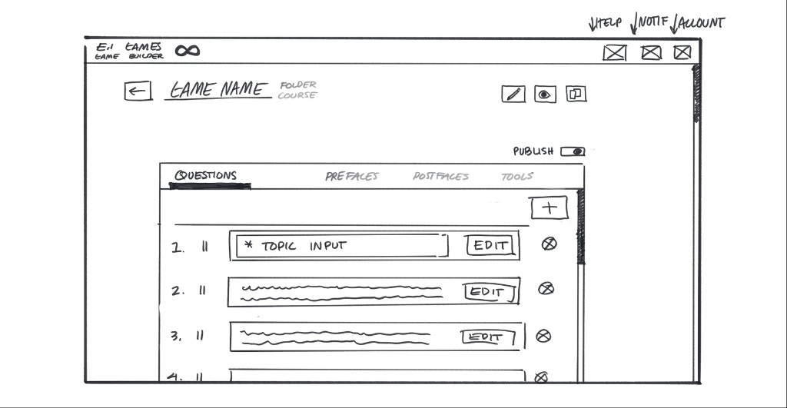
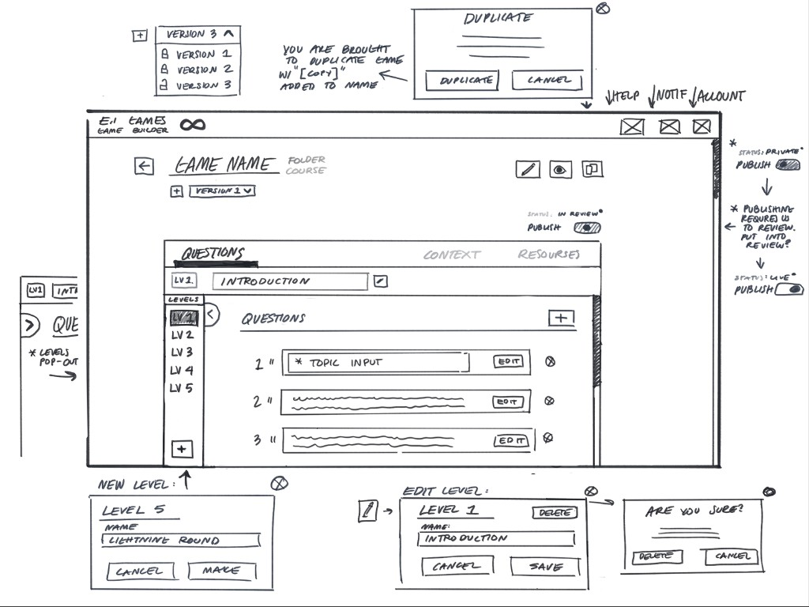
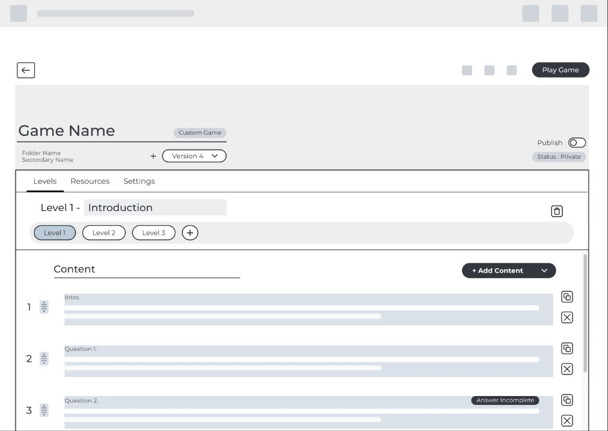
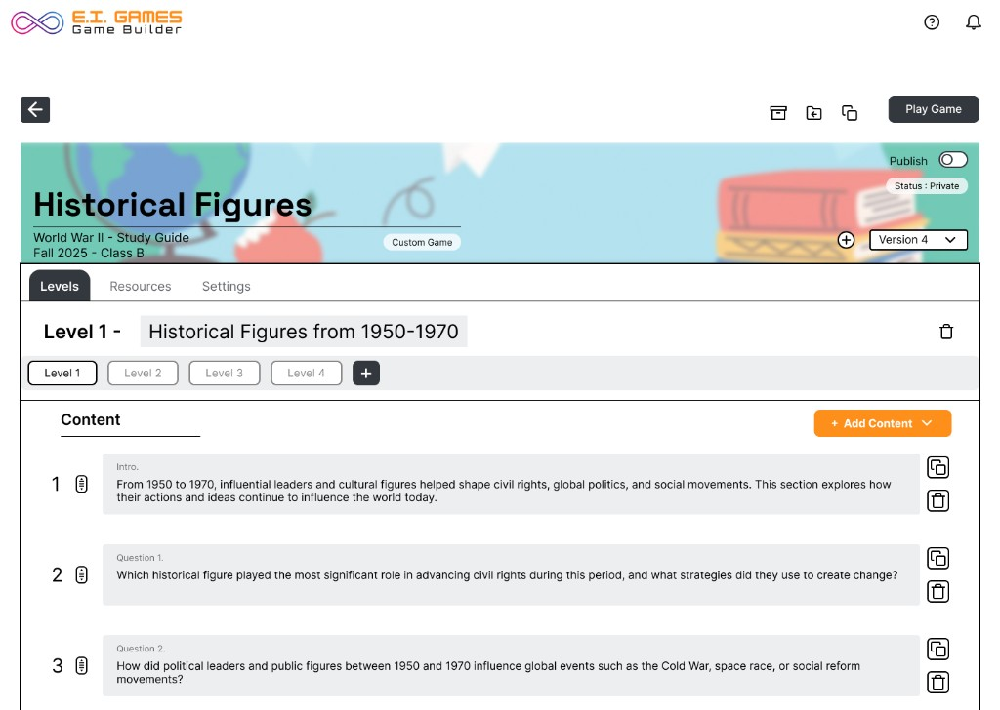

Redesigning the game builder educators use to create gamified lessons—clearer structure for levels, content, and publishing so teachers can focus on teaching, not fighting the UI.
Each block pairs the screen for that iteration with Problems and Solutions in the column next to it—stacked so they’re easy to read.
Before redesign · baseline UI

The live builder worked, but the UI didn’t yet read as one clear path from structuring a game to publishing it.
Problems
Solutions
Cleaner UI, incomplete mental model

Cleaner UI, but missing the core mental model of how teachers build.
Problems
Solutions
Structure in place, interaction still heavy

Introduced structure, but needed to simplify how users interact with it.
Problems
Solutions
More intuitive structure, guidance still thin

A more intuitive structure, but still needed stronger guidance and clarity.
Problems
Solutions
Direction for the live builder

Final direction: a calmer editor with a clear game → levels → content story and obvious publish paths.
Problems
Solutions
“Elevated our product with a design that prioritized both function and user-friendliness. Great experience and an absolute pleasure to work with.”
I worked with E.I. Games on remaking their game builder—the tool teachers use to assemble gamified learning experiences. The goal was a more intuitive layout so educators could find levels, add content, and understand publish status without second-guessing where to click.
The redesign direction reduces cognitive load on dense screens: level selection, content lists, and status (private / review / live) read as one story instead of three disconnected areas.
I stayed in close sync with stakeholders while wireframing and mocking UI so tradeoffs around scope, engineering effort, and teacher habits stayed visible early—not only at handoff.
EdTech tools have to work for people who are interrupted constantly. Patterns that feel “standard” elsewhere still need validation when the user is managing a room of kids and a timer at the same time.